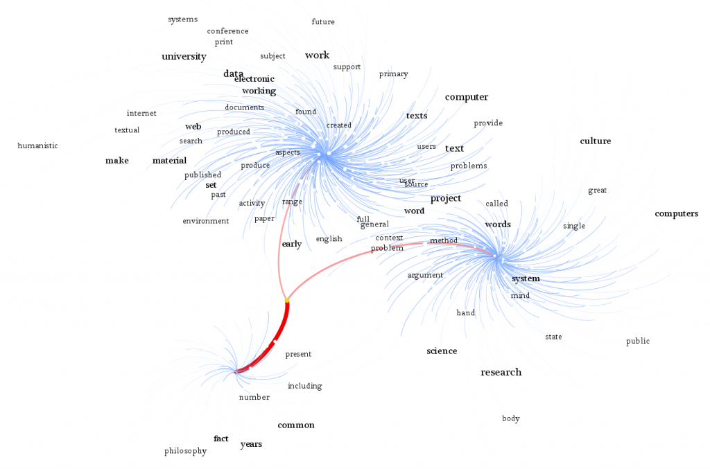

Roberto Busa died on Monday. He was 97. My first exposure to the old Jesuit was the foreword to A Companion to Digital Humanities, where he wrote of the grace of God in the invention of magnetic media. Busa’s “Perspectives on the Digital Humanities” was included in both my original Comprehending the Digital Humanities topic network exploration as well as my Day of DH11 sequel, and so I can at least provide him some memorial, though cheap and wanting.


Updated to add a link to Stephan Ramsay’s excellent post on Busa.